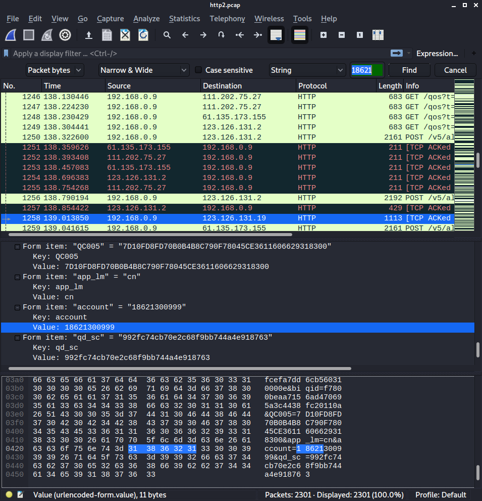
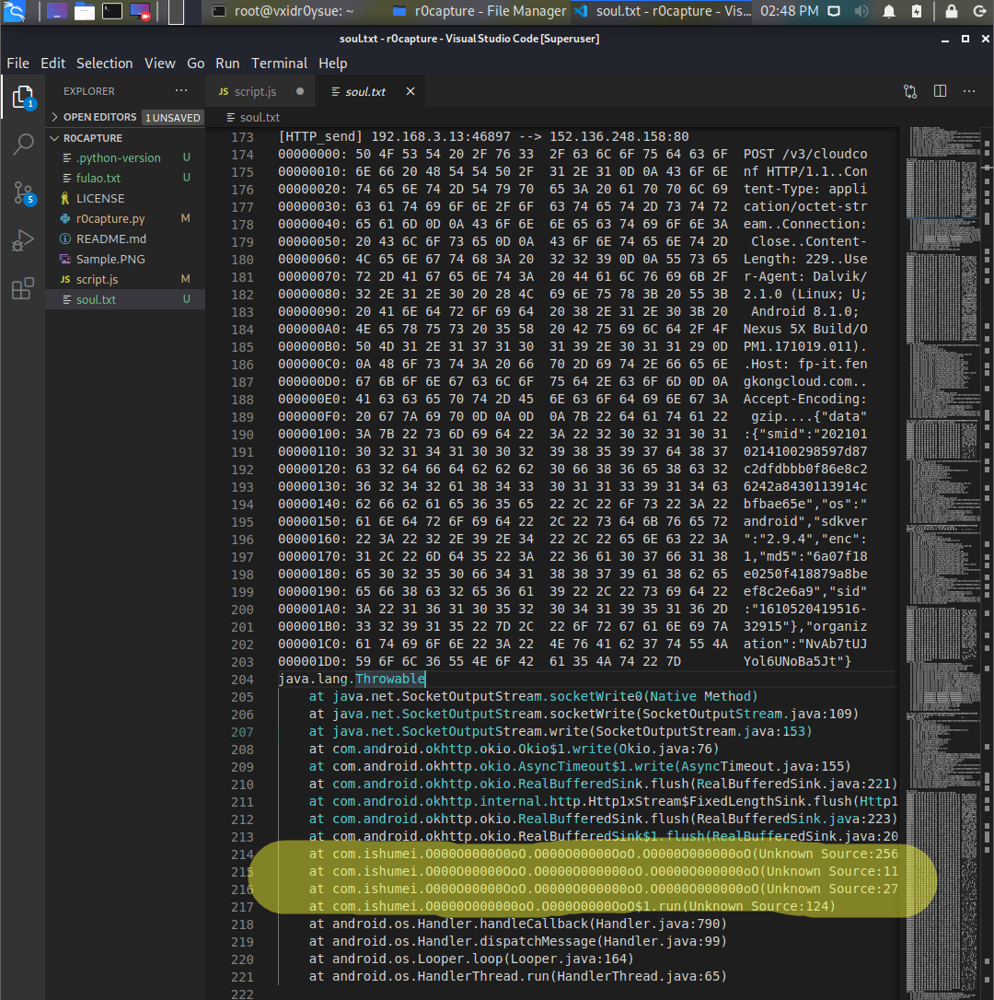
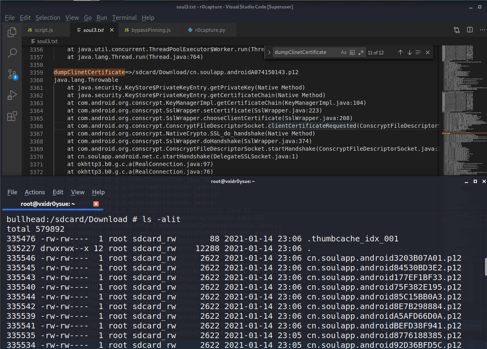
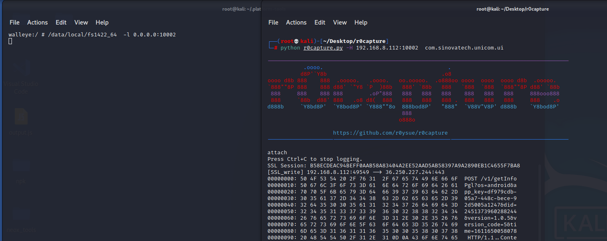
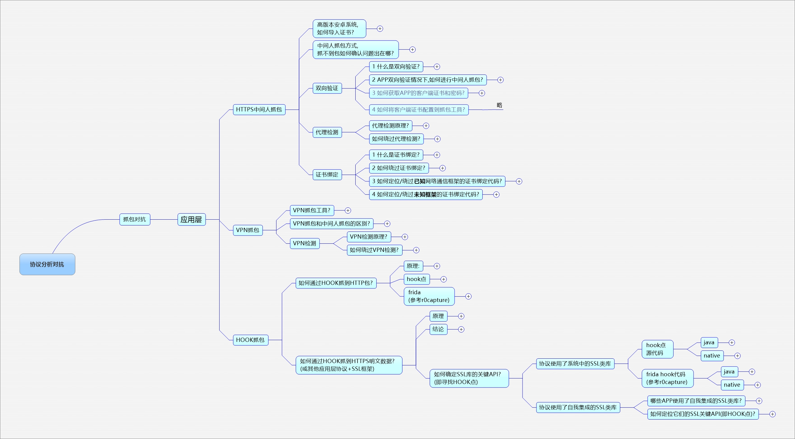

安卓应用层抓包通杀脚本
切记仅限安卓平台7、8、9、10、11 可用 ，禁止使用模拟器。
$ python3 r0capture.py -U -f com.qiyi.video -v
$ python3 r0capture.py -U com.qiyi.video -v -p iqiyi.pcap
建议使用Attach模式，从感兴趣的地方开始抓包，并且保存成pcap文件，供后续使用Wireshark进行分析。

Spawn和attach模式均默认开启；可以使用
python r0capture.py -U -f cn.soulapp.android -v >> soul3.txt这样的命令将输出重定向至txt文件中稍后过滤内容

运行脚本之前必须手动给App加上存储卡读写权限；
并不是所有App都部署了服务器验证客户端的机制，只有配置了的才会在Apk中包含客户端证书
导出后的证书位于/sdcard/Download/包名xxx.p12路径，导出多次，每一份均可用，密码默认为：r0ysue，推荐使用keystore-explorer打开查看证书。



PS：
这个项目基于frida_ssl_logger，之所以换个名字，只是侧重点不同。 原项目的侧重点在于抓ssl和跨平台，本项目的侧重点是抓到所有的包。
局限：部分开发实力过强的大厂或框架，采用的是自身的SSL框架，比如WebView、小程序或Flutter，这部分目前暂未支持。部分融合App本质上已经不属于安卓App，没有使用安卓系统的框架，无法支持。当然这部分App也是少数。暂不支持HTTP/2、或HTTP/3，该部分API在安卓系统上暂未普及或布署，为App自带，无法进行通用hook。各种模拟器架构、实现、环境较为复杂，建议珍爱生命、使用真机。暂未添加多进程支持，比如:service或:push等子进程，可以使用Frida的Child-gating来支持一下。支持多进程之后要考虑pcap文件的写入锁问题，可以用frida-tool的Reactor线程锁来支持一下。
https://github.com/BigFaceCat2017/frida_ssl_logger
ssl_logger based on frida
for from https://github.com/google/ssl_logger
python3 ./ssl_logger.py -U -f com.bfc.mm
python3 ./ssl_logger.py -v -p test.pcap 6666